La pagina di login verifica le credenziali inserite dal docente e la validità del suo account.
Tramite una variabile di sessione viene tenuta traccia dei tentativi di accesso ed al terzo tentativo errato,
l'account del docente viene invalidato aggiornando l'apposito campo nella tabella 'utenti'.
I vari logs di errore generati in questa ed altre pagine vengono memorizzati in un file di testo, mentre
all'utente viene mostrato un messaggio di errore generico.
Se la verifica va a buon fine, il docente viene reindirizzato alla pagina di benvenuto.
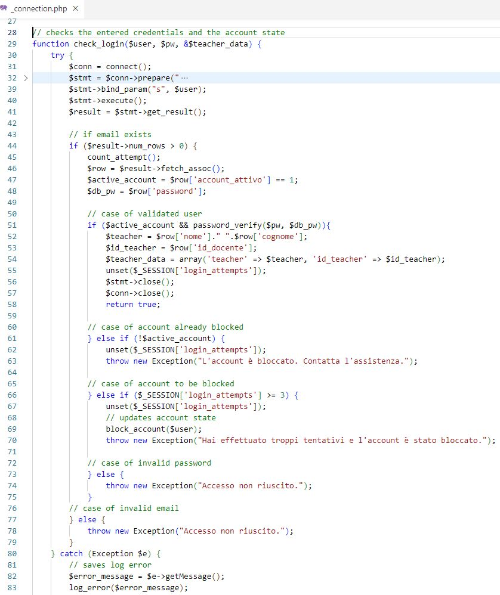
A login effettuato, tutte le pagine includono _base.php e _footer.php come struttura comune.
_base.php avvia la sessione, imposta i parametri dei cookies, il time-out di attività e ad ogni aggiornamento
verifica in sequenza una serie di condizioni per validare la la sessione e proseguire il caricamento.
In caso positivo mostra il menù e l'header con data, ora e infomazioni sul docente loggato, altrimenti mostra
un messaggio di disconnessione e reindirizza alla pagina di logout.
Tutte le funzioni chiamate si trovano nelle pagine _function.php e _connection.php (in quest'ultima vi sono
quelle che interagiscono col database).
Queste funzioni sono implementate seguendo le principali pratiche di sicurezza quali prepared statement, passaggio
variabili con htmlspecialchars e crittografia delle password.
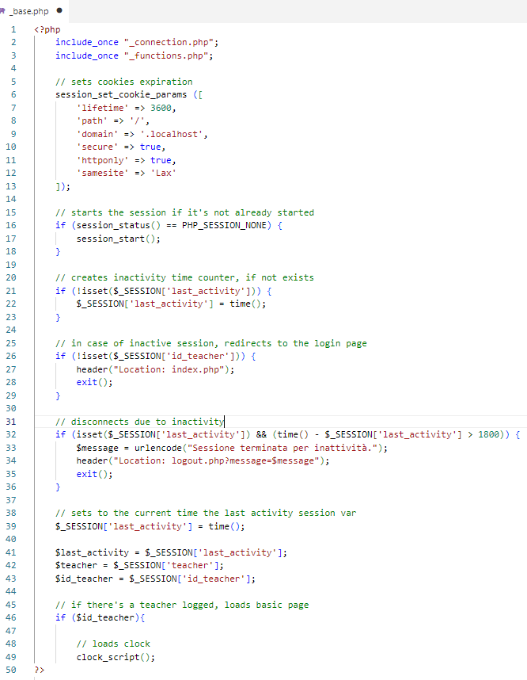
La pagina welcome.php offre una panoramica su corsi e lezioni del docente.
Tramite la query 'next_lesson' ottiene, se presente, la prima occorrenza tra le lezioni in programma
e mostra nella sezione sinistra se vi è una lezione in corso o, se programmata, tra quanto inizierà.
Tramite la query 'get_courses_by_period' e funzioni collegate mostra, nella sezione destra, il conteggio
di tutti i corsi del docente suddivisi per 'attivi', 'terminati' e 'in programmazione.
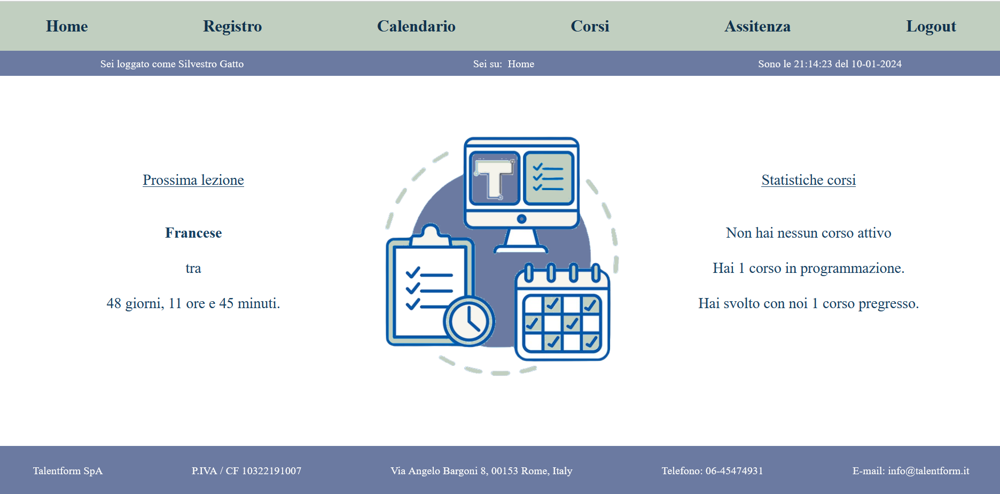
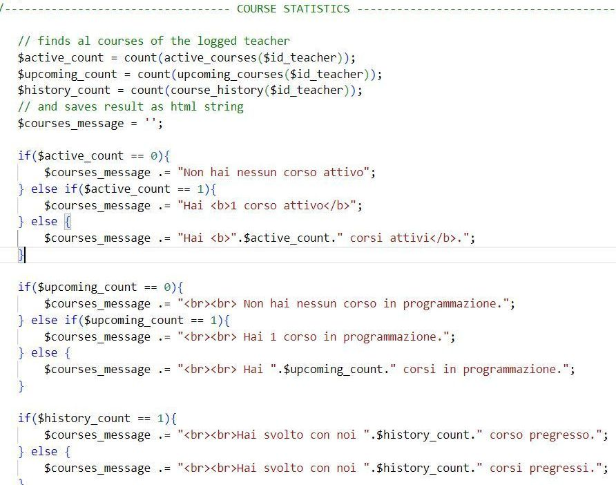
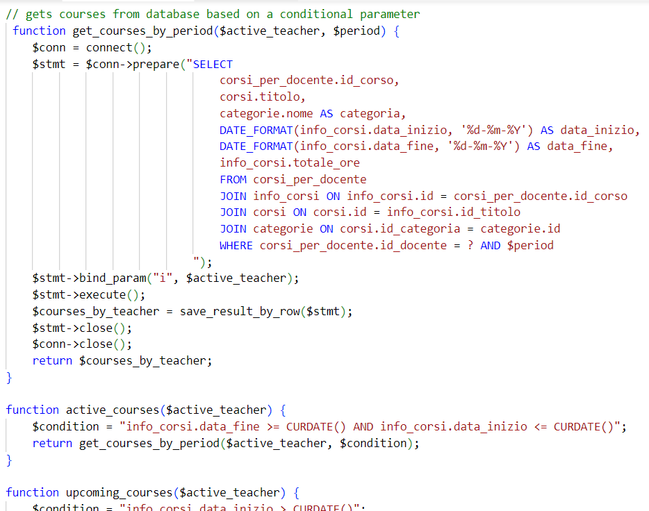
La pagina register.php, solo in caso di lezione in corso, mostra l'elenco degli studenti
e prevede 2 radio buttons, assente/presente.
Se la spunta è in posizione opposta rispetto alla predefinita, la funzione JavaScript 'set_input_field' attiva le
caselle 'orario' e 'note' per permettere al docente di inserire la variazione.
Al primo invio della lezione, la casella orario viene mostrata in sola lettura in quanto è obbligatorio che coincida
con l'orario di inizio lezione.
Per gli invii successivi, il sistema effettua un controllo imponendo come limite minimo l'orario dell'ultimo aggiornamento del registro
e come massimo l'ora di fine lezione.
Il form inviato viene elaborato nella pagina register_sent.php.
Qui vengono gestiti 4 diversi statements MySQL:
inserimento o aggiornamento dello stato, inserimento o aggiornamento dell'assenza.
Tutti gli stati inziali della radio box vengono salvati temporaneamente, ed aggiornati in caso di variazione, nella tabella 'stato_presenze',
per facilitare la gestione delle uscite e dei rientri all'interno della stessa lezione.
Nella tabella'registro_assenze' vengono invece inseriti data, orario e note delle sole assenze, aggiornando l'orario di fine dell'assenza
precedentemente inserita in caso di rientro del corsista.
Ad ogni reload di pagina viene ricaricato e mostrato l'ultimo stato dei corsisti con orario e annotazione dell'eventuale ultima variazione.
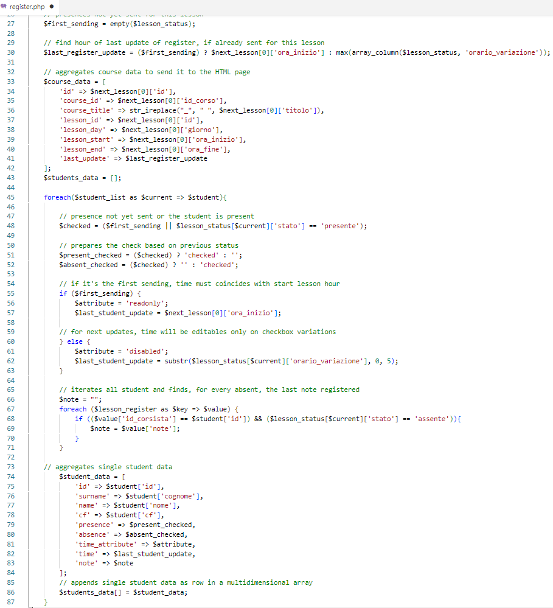
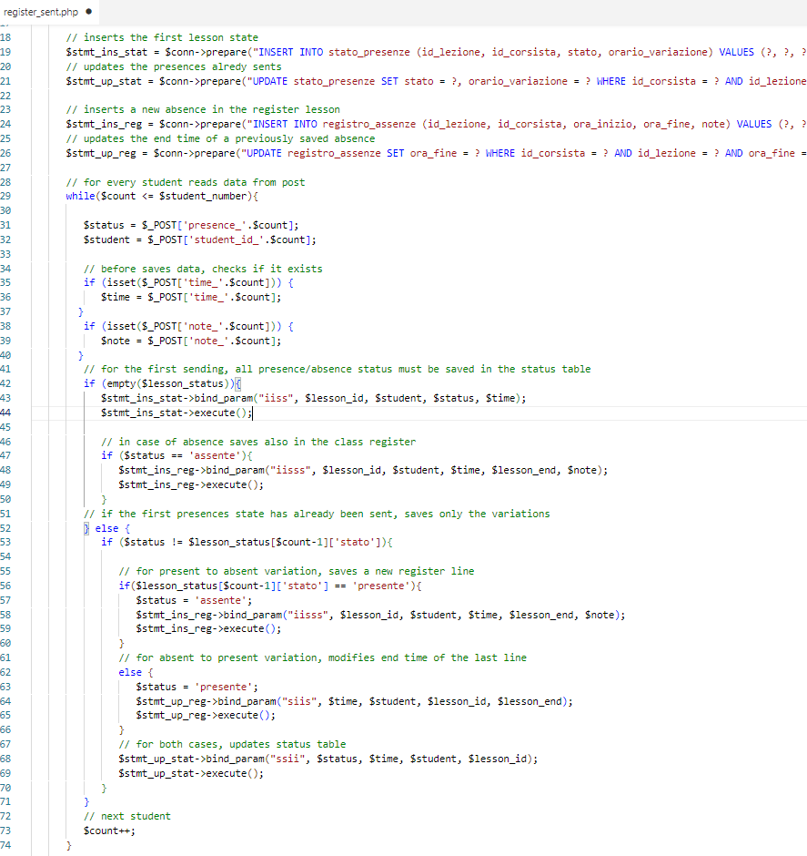
La pagina calendar.php mostra il calendario delle lezioni programmate ed è possibile salvare la lista in PDF o in XLSX.
La pagina courses.php mostra i dettagli sui corsi del docente chiamando nuovamente la funzione 'get_courses_by_period' e la funzione 'create_section'
che genera la tabella ed i pulsanti di salvataggio.
Anche qui è possibile salvare le liste in PDF e XLSX.
Le tabelle da salvare vengono elaborate nella pagina save_document.php, che chiama le funzioni 'save_pdf' ed 'export_xlsx'.
Per la creazione dei documenti sono state utilizzate le librerie Dompdf e PhpSpreadsheet.
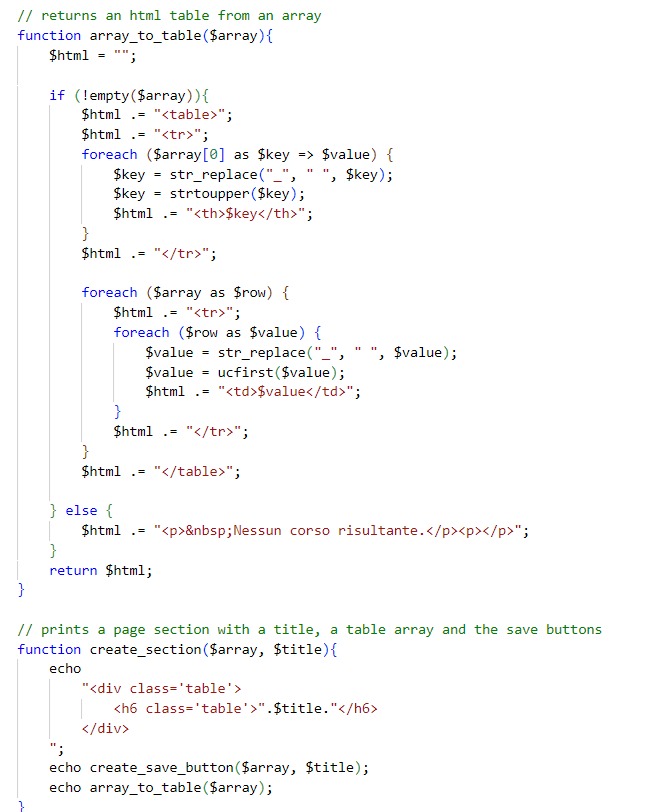
La pagina assistance.php consente al docente di inviare una richiesta compilando un form con oggetto e corpo della mail.
Per configurare ed inoltrare la mail viene chiamata la funzione 'send_email' e si fa uso della libreria PHPMailer.
La pagina logout.php distrugge la sessione in corso e avvisa l'utente dell'avvenuta disconnessione, stampando un messaggio
di avviso specifico quando si tratta di disconnessione automatica per perdita della sessione.
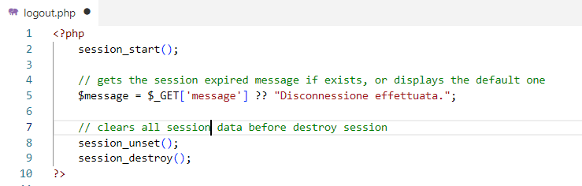
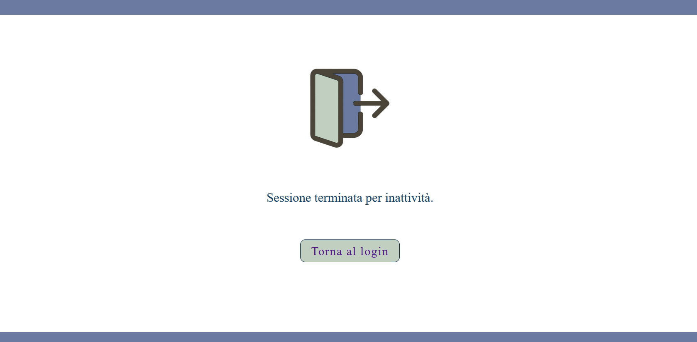
Nella directory 'database' sono presenti i file di creazione e compilazione delle tabelle necessarie, suddivisi nei blocchi
create.sql, insert.sql e procedures.sql.
Le procedures implementate, richiamate in sequenza su insert.sql, automatizzano il processo di inserimento di nuovi elementi:
'insert_corso' popola la tabella 'info_corsi' con id univoco, date, nome e categoria, calcolandone il monte ore ed associando
le chiavi esterne, poi compila la tabella 'lezioni' sulla base della fascia oraria richiesta ed eslcudendo i giorni festivi
prelevati da un'apposita tabella.
'insert_corsi_per_corsista' prosegue associando al corso una lista di studenti.
'insert_corsi_per_docente' e 'insert_lezioni_per_docente', infine, collegano i corsi e le singole lezioni ai vari docenti.
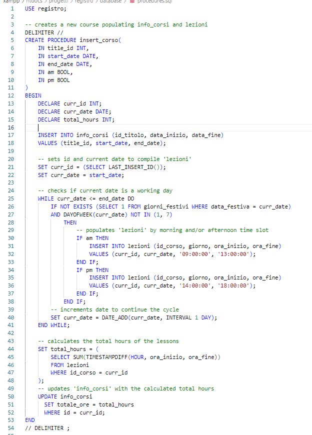